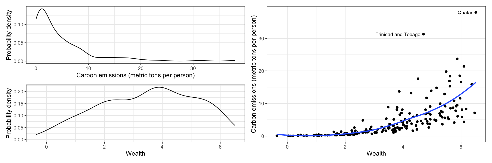
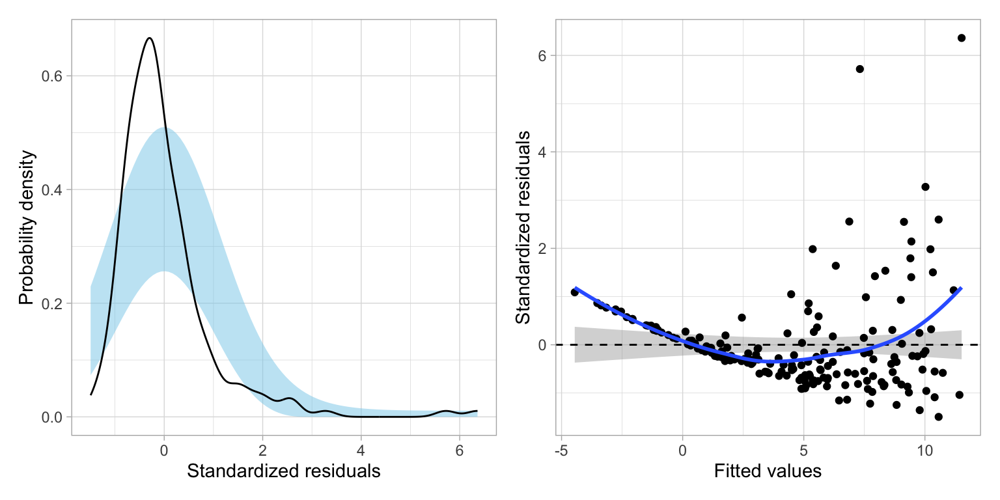
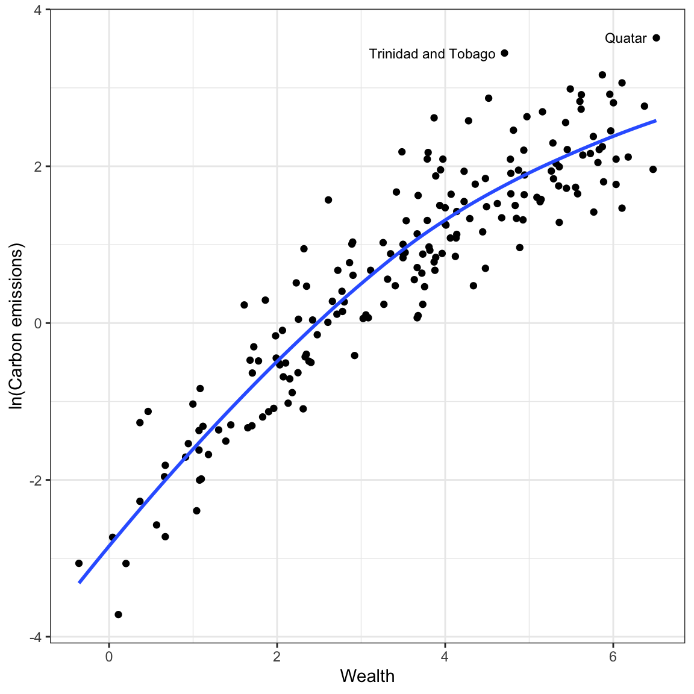
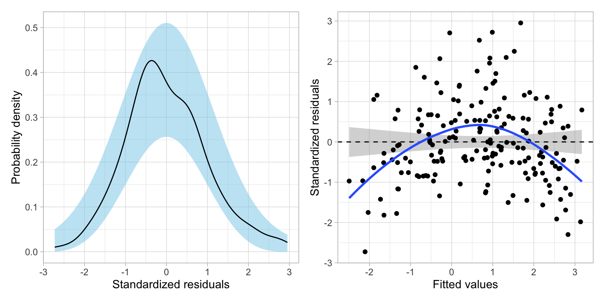
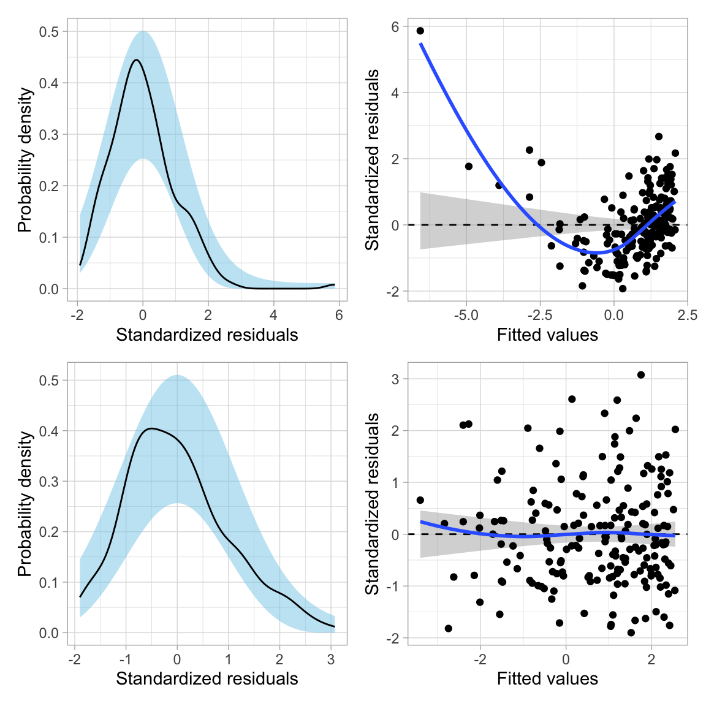
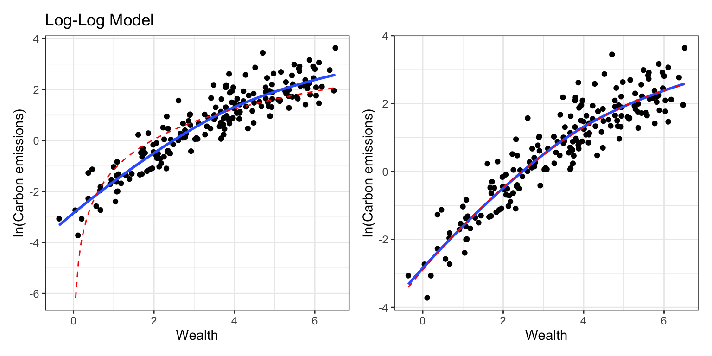
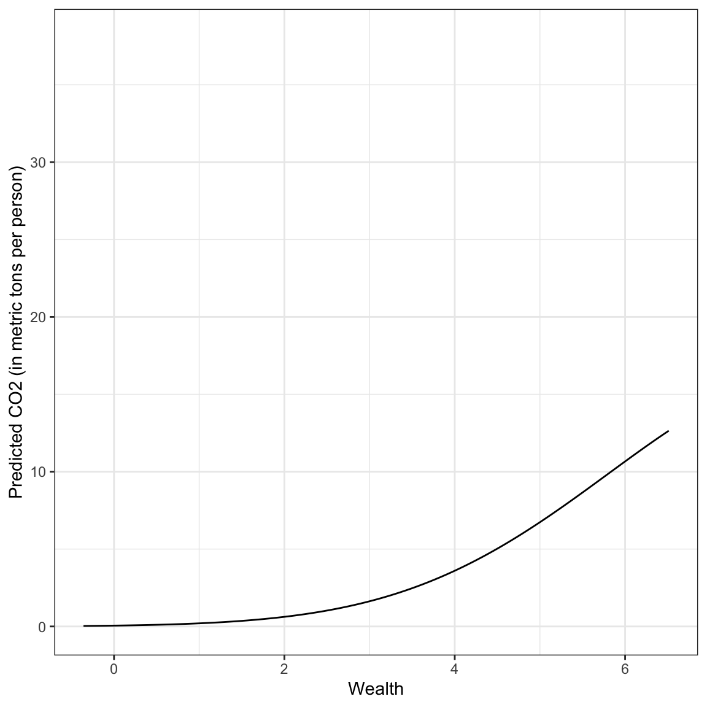
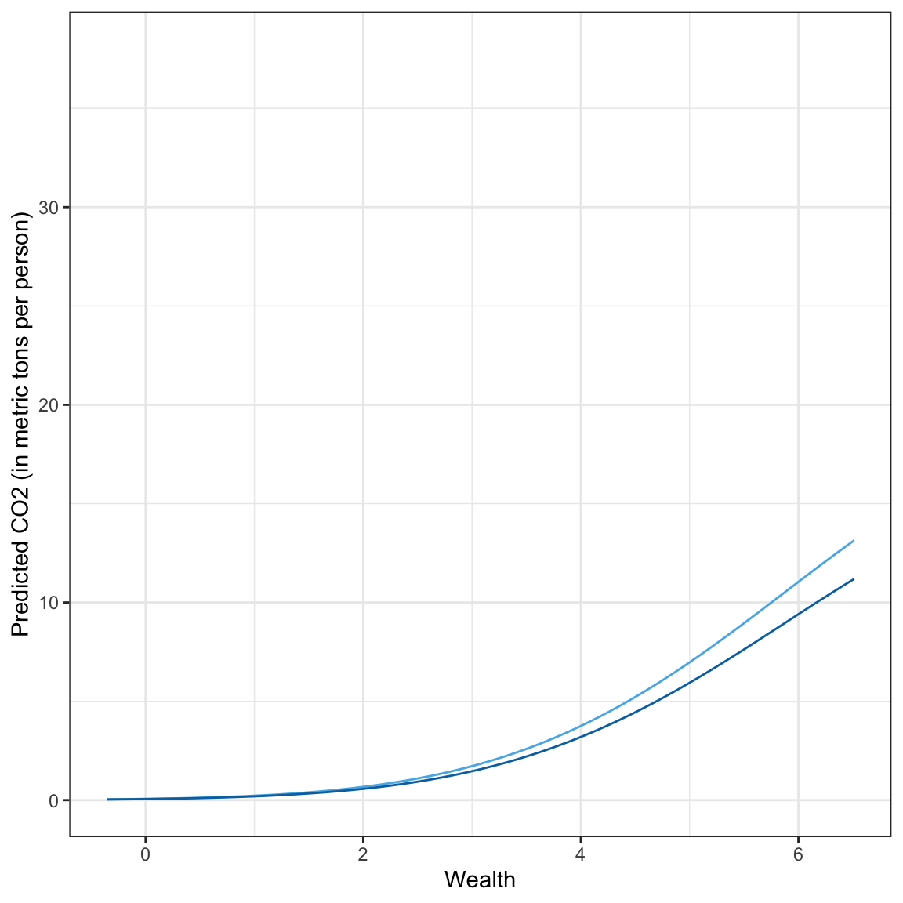
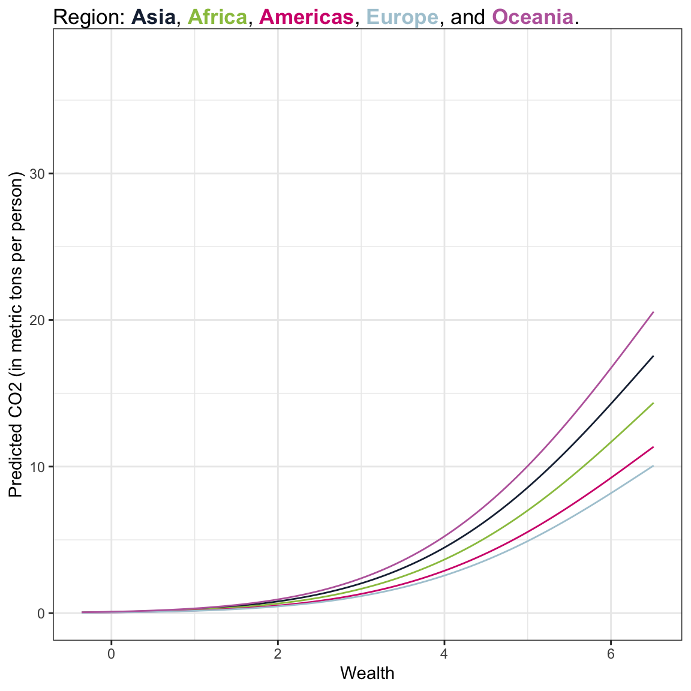

Log-Transforming the Outcome
Preparation
In this set of notes, you will learn a method for dealing with a different pattern of nonlinearity. Specifically, we will look at log-transforming the predictor in a linear model. This transformation can also help rectify violations of the normality and homogeneity of variance assumptions. To do so, we will use the carbon.csv dataset:
Our analytic goal will be to explain variation in worldwide carbon emissions. Specifically:
- What is the functional form between country’s wealth and carbon emissions?
- Does this relationship persist after controlling for urbanization?
- Does this relationship vary between world regions?
Within this work, we will use information theoretic approcaches (namely the AICc and related measures) to evaluate any fitted models.
# Load libraries
library(AICcmodavg)
library(broom)
library(educate)
library(gt)
library(patchwork)
library(texreg)
library(tidyverse)
# Read in data
carbon = read_csv(file = "https://raw.githubusercontent.com/zief0002/bespectacled-antelope/main/data/carbon.csv")
# View data
carbonRelationship between Wealth and Carbon Emissions
To being the analysis, we will examine the marginal distributions of wealth (predictor) and carbon emissions (outcome), as well as a scatterplot between them for our sample data.
# Marginal distribution of co2 (outcome)
p1 = ggplot(data = carbon, aes(x = co2)) +
geom_density() +
theme_bw() +
xlab("Carbon emissions (metric tons per person)") +
ylab("Probability density")
# Marginal distribution of wealth (predictor)
p2 = ggplot(data = carbon, aes(x = wealth)) +
geom_density() +
theme_bw() +
xlab("Wealth") +
ylab("Probability density")
# Scatterplot
p3 = ggplot(data = carbon, aes(x = wealth, y = co2)) +
geom_point() +
geom_smooth(se = FALSE) +
theme_bw() +
xlab("Wealth") +
ylab("Carbon emissions (metric tons per person)") +
annotate(geom = "text", x = 6.4, y = 38, label = "Quatar", size = 3, hjust = 1) +
annotate(geom = "text", x = 4.6, y = 31.3, label = "Trinidad and Tobago", size = 3, hjust = 1)
# Place figures side-by-side
(p1 / p2) | p3
The distribution of CO2 emissions is severely right-skewed. Although the median emissions is around 2.5 metric tons per person, the plot shows evidence that several countries have high emissions. The distribution of wealth is more symmetric (perhaps a little left-skewed), with most countries having a weath level around 3.5.
The scatterplot suggests a positive, nonlinear relationship between wealth and CO2 emissions; countries that are wealthier also tend to have higher CO2 emissions. It also suggests that there is more variation in CO2 emissions at higher levels of wealth than at lower levels of wealth—potential violation of the homoskedasticity assumption.
We can see these assumption violations much more clearly in the scatterplot of residuals versus fitted values from a fitted linear model regressing CO2 emissions on wealth.
# Fit model
lm.1 = lm(co2 ~ 1 + wealth, data = carbon)
# Obtain residual plots
residual_plots(lm.1)
These plots suggest violations of the normality assumption and of the assumption of homoskedasticity. The assumption that the average residual is 0, also may be in question, loess smoother deviates from the confidence envelope based on the \(Y=0\) line in several places reflecting the nonlinearity in the relationship between CO2 emissions and wealth.
Transform the Outcome Using the Natural Logarithm (Base-e)
We can mathematically transform the outcome using a logarithm to potentially alleviate the problems of:
- Non-linearity
- Non-normality when the conditional distributiona of the outcome are right-skewed (or have high-end outliers), or
- Heteroskedasticity
Any base can be used for the logarithm, but we will transform the outcome using the natural logarithm because of the interpretive value.
Recall that the logarithm is the inverse function of an exponent. As an example, consider the CO2 emissions and natural log-transformed CO2 emissions for Afghanistan:
\[ \ln(0.254) = -1.37 \]
Remember, in this case, the logarithm answers the mathematical question:
Interpretation
\(e\) to what power is equal to 0.254?
The answer to this question is:
\[ e^{-1.37} = 0.254 \]
Re-analyze using the Log-Transformed CO2 Emissions
Now we will re-examine the scatterplot using the log-transformed outcome to see how this transformation affects the relationship between wealth and carbon emissions. While we could create the log-transformed CO2 emissions as a new column in the data, and use that new column in our plots and models, we will instead use the log() function directly on the outcome in our ggplot() and lm() functions.
# Scatterplot
ggplot(data = carbon, aes(x = wealth, y = log(co2))) +
geom_point() +
geom_smooth(se = FALSE) +
theme_bw() +
xlab("Wealth") +
ylab("ln(Carbon emissions)") +
annotate(geom = "text", x = 6.4, y = 3.64, label = "Quatar", size = 3, hjust = 1) +
annotate(geom = "text", x = 4.6, y = 3.44, label = "Trinidad and Tobago", size = 3, hjust = 1) 
Log-transforming the outcome has drastically affected the scale for the outcome. The relationship between wealth and the log-transformed CO2 emissions is much more linear. The two movies which had extremely high CO2 emissions when we examined raw CO2, no longer seems like outliers in the transformed data. The differences in variation of log-carbon emissions between lower wealtyh and higher wealth countries also seems less severe.
Has this helped us better meet the distributional assumptions for the regression model? To find out, we will re-fit the model using the log-transformed budget and examine the residual plots.
# Fit model
lm.2 = lm(log(co2) ~ 1 + wealth, data = carbon)
# Obtain residual plots
residual_plots(lm.2)
These plots suggest that after the transforming the outcome, there is a great deal of improvement in meeting the assumption of normality. The assumption of homoskedasticity also looks markedly improved. There still seems to be violations of the linearity assumption, and in fact we see in the original scatterplot between wealth and the log-transformed CO2 emissions the same pattern of non-linearity we saw in the MN colleges data.
For now, we will proceed so you understand how to interpret coefficients from models where the outcome has been log-transformed, but we will come back and fix this nonlinearity later.
Interpreting the Regression Output
We will now examine the model- and coefficient-level output from the model.
# Model-level output
glance(lm.2)The model-level summary information suggests that differences in wealth explains 83.8% of the variation in carbon dioxide emissions. (Remember, explaining variation in log-emissions is the same as explaining variation in emissions.)
# Coefficient-level output
tidy(lm.2)From the coefficient-level output, the fitted equation is:
\[ \ln\left(\widehat{\mathrm{CO2}_i}\right) = -2.20 + 0.824(\mathrm{Wealth}_i) \]
With log-transformations, there are two possible interpretations we can offer. The first is to interpret the coefficients using the log-transformed metric. These we interpret in the exact same way we do any other regression coefficients (except we use log-outcome instead of outcome):
- The intercept, \(\hat{\beta_0} = -2.20\), is the average predicted log-emission for countries with a wealth level of 0 (extrapolation).
- The slope, \(\hat{\beta_1} = 0.824\), indicates that each one-point difference in the wealth measure is associated with log-emssion that differs by \(0.824\), on average.
Back-Transforming: A More Useful Interpretation
A second, probably more useful, interpretation is to back-transform the metric of log-emisssions to the metric of raw emissions. To think about how to do this, we first consider a more general expression of the fitted linear model:
\[ \ln\left(\hat{Y}_i\right) = \hat\beta_0 + \hat\beta_1(X_{i}) \]
The left-hand side of the equation is in the log-transformed metric, which drives our interpretations. If we want to instead, interpret using the raw metric of Y, we need to back-transform from \(\ln(Y)\) to Y. To back-transform, we use the inverse function, which is to exponentiate using the base of the logarithm, in our case, base-e.
\[ e^{\ln(Y_i)} = Y_i \]
If we exponentiate the left-hand side of the equation, to maintain the equality, we also need to exponentiate the right-hand side of the equation.
\[ e^{\ln(Y_i)} = e^{\hat\beta_0 + \hat\beta_1(X_{i})} \]
Then we use rules of exponents to simplify this.
\[ Y_i = e^{\hat\beta_0} \times e^{\hat\beta_1(X_{i})} \]
For our example, we exponentiate both sides of the fitted equation to get the following back-transformed fitted equation:
\[ \widehat{\mathrm{CO2}_i} = e^{-2.20} \times e^{0.824(\mathrm{Wealth}_i)} \]
Substituting in Values for Wealth to Interpret Effects
To interpret the back-transformed effects, we can substitute in the different values for wealth and solve. For example when wealth = 0:
\[ \begin{split} \widehat{\mathrm{CO2}_i} &= e^{-2.20} \times e^{0.824(0)}\\ &= 0.111 \times 1 \\ &= 0.111 \end{split} \]
The predicted CO2 emissions for a countries that have a wealth level of 0 is 0.111 metric tons per person, on average (extrapolation). How about countries that have a wealth level of 1 (a one-point difference in wealth from countries that have a wealth level of 0)?
\[ \begin{split} \widehat{\mathrm{CO2}_i} &= e^{-2.20} \times e^{0.824(1)}\\ &= 0.111 \times 2.28 \\ &= 0.253 \end{split} \]
The predicted CO2 emission for a countries that have a wealth level of 1 is 0.253 metric tons per person. This is 2.28 TIMES the emissions of countries that have a wealth level of 0. Rather than using the language of TIMES difference you could also use the language of fold difference. In this case the slope coefficient would be interpreted as,
Interpretation
Each one-unit difference in wealth level is associated with a 2.28-fold difference in carbon emissions, on average.
Simply put, when we back-transform from interpretations of log-Y to Y the interpretations are multiplicatively related to the intercept rather than additively related. We can obtain these multiplicative values (and the back-transformed intercept) by using the exp() function to exponentiate the coefficients from the fitted model, which we can obtain using the coef() function.
# Obtain back-transformed interpretations
exp(coef(lm.2))(Intercept) wealth
0.1111884 2.2788237 Interpretation of the Slope as Percent Change
Remember from the previous set of notes, that by using the natural logarithm we can interpret the effects as percent change. Rather than saying that each one-unit difference in wealth is associated with a 2.28-fold difference in carbon emissions, on average. We can also interpret this change as a percent change. To do this, we compute:
\[ \mathrm{Percent~Change} = (e^{\hat{\beta_1}} -1) \times 100 \]
In our example,
\[ \begin{split} \mathrm{Percent~Change} &= e^{0.824} -1 \\[1ex] &= 127.96 \end{split} \]
Thus the interpretation is each one-unit difference in wealth is associated with a 128% change in carbon emissions, on average.
When the slope estimate is small (e.g., \(\hat\beta_k < 0.20\)), we can directly take the slope value and interpret it as the percent change after multiplying it by 100. That is because for small values of the slope,
\[ (e^{\hat{\beta_1}} -1) \approx \hat{\beta_1} \]
Plotting the Fitted Model
As always, we should plot the fitted model to aid in interpretation. To do this we will use the back-transformed expression of the fitted equation:
\[ \widehat{\mathrm{CO2}_i} = e^{-2.20} \times e^{0.824(\mathrm{Wealth}_i)} \]
This can be added to the geom_function() layer of ggplot().
# Plot
ggplot(data = carbon, aes(x = wealth, y = co2)) +
geom_point(alpha = 0) +
geom_function(fun = function(x) {exp(2.20) * exp(0.824*x)} ) +
theme_bw() +
xlab("Wealth") +
ylab("Predicted CO2 emissions (in metric tones per person)")
Based on this plot, we see a non-linear, positive effect of wealth on carbon emissions. Wealthier countries tend to have higher carbon emissions, on average, but the increase in carbon emissions as countries get wealthier is not constant.
This pattern of non-linear increase is referred to as positive exponential growth (it has a positive increasing rate of growth). This pattern is different than what we saw in the fitted equation for the college data from the previous unit, which could be described as positive exponential decay (positive diminishing rates of growth). However, both of these effects are described by monotonic functions which have no change in the direction; both were always increasing (positive).
Modeling the Remaining Non-Linearity
How do we model the non-linearity we observed in the relationship even after we log-transformed the outcome?
# Scatterplot
ggplot(data = carbon, aes(x = wealth, y = log(co2))) +
geom_point() +
geom_smooth(se = FALSE) +
theme_bw() +
xlab("Wealth") +
ylab("ln(Carbon emissions)") +
annotate(geom = "text", x = 6.4, y = 3.64, label = "Quatar", size = 3, hjust = 1) +
annotate(geom = "text", x = 4.6, y = 3.44, label = "Trinidad and Tobago", size = 3, hjust = 1) 
The pattern in the scatterplot shown by the loess smoother in the plot, suggests a curvilinear pattern similar to what we observed in the college data in previous sets of notes. This means we can try to model the non-linearity by: (1) log-transforming the predictor (in addition to log-transforming the outcome), or (2) include a polynomial effect of running time in the model. How do you choose? Fit both models and examine the residuals.
# Fit log-log model
lm.log = lm(log(co2) ~ 1 + log(wealth), data = carbon)
# Fit polynomial model
lm.poly = lm(log(co2) ~ 1 + wealth + I(wealth^2), data = carbon)
# Residual plots
p1 = residual_plots(lm.log)
p2 = residual_plots(lm.poly)
# Plot top/bottom
p1 / p2
Based on the residual plots, the polynomial model seems to show better fit to the assumption that the average residual is 0 than the log-log model. We can also see this by comparing the fit of each model to the pattern modeled by the loess smoother in the scatterplot of the log-budgets versus the running times. To do this we would need to obtain the coefficient-level output for each fitted model and then use geom_function() to include the fitted curve onto the scatterplot.
# Log-log model
p1 = ggplot(data = carbon, aes(x = wealth, y = log(co2))) +
geom_point() +
geom_smooth(se = FALSE) +
geom_function(fun = function(x) {log(exp(-1.144) * x^(1.719))},
color = "red", linetype = "dashed") +
theme_bw() +
xlab("Wealth") +
ylab("ln(Carbon emissions)") +
ggtitle("Log-Log Model")
# polynomial model
p2 = ggplot(data = carbon, aes(x = wealth, y = log(co2))) +
geom_point() +
geom_smooth(se = FALSE) +
geom_function(fun = function(x) {-2.8994 + 1.3824*x -0.0837*x^2},
color = "red", linetype = "dashed") +
theme_bw() +
xlab("Wealth") +
ylab("ln(Carbon emissions)")
# Plot side-by-side
p1 | p2
The polynomial model shows better adherance to the pattern captured by the loess smoother than the log-log model. Thus, we will adopt the polynomial model over the log-log model. We can also using the AICc and associated information theoretic metrics to evaluate the different fitted models.
# Table of model evidence
aictab(
cand.set = list(lm.log, lm.poly),
modnames = c("Log-Log model", "Polynomial model")
)The empirical evidence supports adopting the model with both the linear and quadratic effects of wealth.
glance(lm.poly)Examining the model-level summary information from the quadratic polynomial model, we find that the model explains 86.3% of the variation in carbon emisssions.
# Coefficient-level output
tidy(lm.poly)From the coefficient-level output, the fitted equation is:
\[
\ln\left(\widehat{\mathrm{CO2}_i}\right) = -2.90 + 1.38(\mathrm{Wealth}_i) - 0.0837(\mathrm{Wealth}_i^2)
\]
Interpreting the Effect of Wealth
Since the quadratic term is an interaction term, we interpret the effect of wealth generally as:
Interpretation
The effect of wealth on carbon emissions varies by wealth.
To better understand the nature of this relationship we plot the fitted curve. To do so, we first back-transform the metric of log-carbon emission to the metric of raw carbon emissions. Remember, this creates a multiplicative relationship among the exponentiated coefficients. Exponentiating both sides of the fitted equation:
\[ \widehat{\mathrm{CO2}_i} = e^{-2.90} \times e^{1.38(\mathrm{Wealth}_i)} \times e^{-0.0837(\mathrm{Wealth}_i^2)} \]
Plotting this function will allow us to understand the relationship between wealth and carbon emissions from the polynomial model. Inputting this into the geom_function() layer of our ggplot() syntax, we get:
# Plot
ggplot(data = carbon, aes(x = wealth, y = co2)) +
geom_point(alpha = 0) +
geom_function(fun = function(x) {exp(-2.90) * exp(1.38*x) * exp(-0.0837*x^2)} ) +
theme_bw() +
xlab("Wealth") +
ylab("Predicted CO2 (in metric tons per person)")
Answering the Research Question
The relationship between wealth and carbon emisssions is complicated. It combines the positive exponential growth we saw earlier with the change in curvature of the negative quadratic effect. In general wealthier countries have exponentially increasing CO2 emissions that begins to diminish for countries with exceptionally high wealth levels.
RQ 2: Does the quadratic effect of wealth persist after controlling for urbanization?
To answer the second research we will include urbanization in the model as a covariate. That is, we will fit the model:
\[ \ln\left(\mathrm{CO2}_i\right) = \beta_0 + \beta_1(\mathrm{Wealth}_i) + \beta_2(\mathrm{Wealth}_i^2) + \beta_3(\mathrm{Urbanization_i}) + \epsilon_i \]
where \(\epsilon_i\overset{\mathrm{i.i.d.}}{\sim}\mathcal{N}(0,\sigma^2_{\epsilon})\).
# Fit model
lm.3 = lm(log(co2) ~ 1 + wealth + I(wealth^2) + urbanization, data = carbon)
# Model-level output
glance(lm.3)This model explains 86.1% of the variation in carbon emissions. We also look at the model evidence.
# Table of model evidence
aictab(
cand.set = list(lm.poly, lm.3),
modnames = c("Wealth, Wealth^2", "Wealth, Wealth^2, Urbanization")
)The model that included urbanization has more empirical evidence than the model that doesn’t, but the \(\Delta\)AICc values and model probabilities suggest that both models are reasonable candidates.
# Coefficient-level output
tidy(lm.3)From the coefficient-level output, the fitted equation is:
\[ \ln\left(\widehat{\mathrm{CO2}_i}\right) = -2.74 + 1.34(\mathrm{Wealth}_i) -0.08(\mathrm{Wealth}_i^2) - 0.03(\mathrm{Urbanization}_i) \]
Interpreting these in the log-metric:
- The intercept, \(\hat{\beta_0} = -2.74\), is the average predicted log-emission for countries with a wealth level of 0 and an urbanization of 0 (extrapolation).
- The linear slope of wealth would not be interpreted because it is part of an interaction term.
- There is a negative quadratic effect of wealth on carbon emissions, after controlling for differences in urbanization.
- The urbanization effect indicates that each one-point difference in the urbanization measure is associated with lower log-emissions of \(0.03\), on average, after controlling for differences in wealth.
Back-transforming the fitted equation, we get:
\[ \widehat{\mathrm{CO2}_i} = e^{-2.74} \times e^{1.34(\mathrm{Wealth}_i)} \times e^{-0.08(\mathrm{Wealth}_i^2)} \times e^{- 0.03(\mathrm{Urbanization}_i)} \]
Plotting this function will allow us to understand the relationship between wealth, urbanization, and carbon emissions from the polynomial model. Here I choose a low level of urbanization (0.8) and a high level of urbanization (6.2) based on the data. We substitute these into the fitted equation to get an equation expressing carbon emissions as a function of wealth which we will then input into a geom_function() layer of our ggplot() syntax.
Low Urbanization
\[ \begin{split} \widehat{\mathrm{CO2}_i} &= e^{-2.74} \times e^{1.34(\mathrm{Wealth}_i)} \times e^{-0.08(\mathrm{Wealth}_i^2)} \times e^{- 0.03(0.8)} \\[2ex] &= .065 \times e^{1.34(\mathrm{Wealth}_i)} \times e^{-0.08(\mathrm{Wealth}_i^2)} \times .976 \\[2ex] &= .0634 \times e^{1.34(\mathrm{Wealth}_i)} \times e^{-0.08(\mathrm{Wealth}_i^2)} \end{split} \]
High Urbanization
\[ \begin{split} \widehat{\mathrm{CO2}_i} &= e^{-2.74} \times e^{1.34(\mathrm{Wealth}_i)} \times e^{-0.08(\mathrm{Wealth}_i^2)} \times e^{- 0.03(6.2)} \\[2ex] &= .065 \times e^{1.34(\mathrm{Wealth}_i)} \times e^{-0.08(\mathrm{Wealth}_i^2)} \times .830 \\[2ex] &= .054 \times e^{1.34(\mathrm{Wealth}_i)} \times e^{-0.08(\mathrm{Wealth}_i^2)} \end{split} \]
# Plot
ggplot(data = carbon, aes(x = wealth, y = co2)) +
geom_point(alpha = 0) +
geom_function(fun = function(x) {.0634 * exp(1.34*x) * exp(-0.08*x^2)}, color = "#56b4e9") +
geom_function(fun = function(x) {.054 * exp(1.34*x) * exp(-0.08*x^2)}, color = "#0072b2") +
theme_bw() +
xlab("Wealth") +
ylab("Predicted CO2 (in metric tons per person)")
Answering the Research Question
Here we see that in general wealthier countries have exponentially increasing CO2 emissions that begins to diminish for countries with exceptionally high wealth levels. This pattern is true for countries with both low and high urbanization, although the countries with higher urbanization have lower exponentially increasing carbon emissions.
RQ 3: Does the Effect of Wealth Vary Between World Regions?
To answer the third research question, we will include world region and urbanization into the model along with our linear and quadratic effects of wealth. To determine if the effects of wealth are different across the different regions we have to include interaction effects between wealth and world region. Since our model includes a quadratic effect of wealth we need to include both:
- \(\mathrm{Wealth} \times \mathrm{World~Region}\), and
- \(\mathrm{Wealth}^2 \times \mathrm{World~Region}\)
Since world region is categorical, we will need to create a set of dummy variables to represent it in the models.
# Create dummy variables for world region
carbon = carbon |>
mutate(
africa = if_else(region == "Africa", 1, 0),
asia = if_else(region == "Asia", 1, 0),
americas = if_else(region == "Americas", 1, 0),
europe = if_else(region == "Europe", 1, 0),
oceania = if_else(region == "Oceania", 1, 0),
)
# View data
carbonWe will start by fitting a model that includes the main-effect of world region in addition to our effects of wealth and urbanization. As always, when we have multiple dummy variables representing a predictor, we include all but one of the dummies in the model. Here we will omit Oceania (our reference group).
# Fit model
lm.4 = lm(log(co2) ~ 1 + wealth + I(wealth^2) + urbanization + asia + africa + americas + europe, data = carbon)We also want to include our interactions between world region and wealth. To do this we have to include multiple interaction terms because we have multiple dummy variables. For example, here is the model that includes interactions between region and the lineqar effect of wealth and region and the quadratic effects of wealth where, once again, Oceania is our references group.
# Fit model
lm.5 = lm(log(co2) ~ 1 + wealth + I(wealth^2) + urbanization +
asia + africa + americas + europe +
asia:wealth + africa:wealth + americas:wealth + europe:wealth +
asia:I(wealth^2) + africa:I(wealth^2) + americas:I(wealth^2) + europe:I(wealth^2),
data = carbon)Evaluating these models:
aictab(
cand.set = list(lm.3, lm.4, lm.5),
modnames = c("No world region", "Main effect of region", "Interaction between region and wealth")
)Here, the empirical evidence favors the model that includes the main effect of world region indicating that there is not evidence of an interaction between world region and wealth. Below we look at the coefficients and write the fitted equation.
tidy(lm.4)\[ \begin{split} \ln\left(\widehat{\mathrm{CO2}_i}\right) = &-2.14 + 1.28(\mathrm{Wealth}_i) -0.07(\mathrm{Wealth}_i^2) - 0.10(\mathrm{Urbanization}_i) \\ &-0.16(\mathrm{Asia}_i) - .36(\mathrm{Africa}_i) - .59(\mathrm{Americas}_i) - 0.71(\mathrm{Europe}_i) \end{split} \]
Recall that the coefficients associated with the different regions are comparisons to the reference group. For example, the Asia coefficient indicates that Asia has lower log-carbon emissions than Oceania by 0.16, on average, controlling for differences in wealth and urbanization. We can also back transform this and interpret it as percent change:
\[ e^{-.16} - 1 = -.147 \]
Asia’s carbon emissions are 14.7% lower than Oceania’s carbon emissions, on average, controlling for differences in wealth and urbanization.
In this analysis, we are most interested in the effect of wealth on carbon emisssions. So I will again create a plot of this model’s results. After creating this plot we can describe any regional differences, but we will not make inferences about regional differences. To create this plot I will set urbanization to its mean level (2.00) and then produce a fitted equation for each world region. I will do this with the back-transformed outcome.
If the goal of the analysis was to compare different regions, you would have to fit other models to make the different comparisons. If we were using p-values for variable selection, you would also have to adjust based on the total number of pairwise (region-to-region) comparisons using something like the Boferroni or Benjamini-Hochberg adjustments. However, it is less clear how to view multiple comparisons when using information criteria. Dayton (1998) laid out a framework for using measures such as AIC for the multiple comparisons problem.
Asia
\[ \begin{split} \widehat{\mathrm{CO2}_i} &= e^{-2.14} \times e^{1.28(\mathrm{Wealth}_i)} \times e^{-.07(\mathrm{Wealth}_i^2)} \times e^{-.10(2.00)} \times e^{-.16(1)} \times e^{-.36(0)} \times e^{-.59(0)} \times e^{-.71(0)}\\[2ex] &= .117 \times e^{1.28(\mathrm{Wealth}_i)} \times e^{-.07(\mathrm{Wealth}_i^2)} \times .819 \times .852 \times 1 \times 1 \times 1\\[2ex] &= .082 \times e^{1.28(\mathrm{Wealth}_i)} \times e^{-.07(\mathrm{Wealth}_i^2)} \end{split} \]
From this we note that the effects of the regions that were not Asia became 1 and dropped out of the model. We can use this in our other world regions to shorten the fitted equation.
Africa
\[ \begin{split} \widehat{\mathrm{CO2}_i} &= e^{-2.14} \times e^{1.28(\mathrm{Wealth}_i)} \times e^{-.07(\mathrm{Wealth}_i^2)} \times e^{-.10(2.00)} \times e^{-.36(1)} \\[2ex] &= .117 \times e^{1.28(\mathrm{Wealth}_i)} \times e^{-.07(\mathrm{Wealth}_i^2)} \times .819 \times .698 \\[2ex] &= .067 \times e^{1.28(\mathrm{Wealth}_i)} \times e^{-.07(\mathrm{Wealth}_i^2)} \end{split} \]
Americas
\[ \begin{split} \widehat{\mathrm{CO2}_i} &= e^{-2.14} \times e^{1.28(\mathrm{Wealth}_i)} \times e^{-.07(\mathrm{Wealth}_i^2)} \times e^{-.10(2.00)} \times e^{-.59(1)} \\[2ex] &= .117 \times e^{1.28(\mathrm{Wealth}_i)} \times e^{-.07(\mathrm{Wealth}_i^2)} \times .819 \times .54 \\[2ex] &= .053 \times e^{1.28(\mathrm{Wealth}_i)} \times e^{-.07(\mathrm{Wealth}_i^2)} \end{split} \]
Europe
\[ \begin{split} \widehat{\mathrm{CO2}_i} &= e^{-2.14} \times e^{1.28(\mathrm{Wealth}_i)} \times e^{-.07(\mathrm{Wealth}_i^2)} \times e^{-.10(2.00)} \times e^{-.71(1)} \\[2ex] &= .117 \times e^{1.28(\mathrm{Wealth}_i)} \times e^{-.07(\mathrm{Wealth}_i^2)} \times .819 \times .491 \\[2ex] &= .047 \times e^{1.28(\mathrm{Wealth}_i)} \times e^{-.07(\mathrm{Wealth}_i^2)} \end{split} \]
Oceania
\[ \begin{split} \widehat{\mathrm{CO2}_i} &= e^{-2.14} \times e^{1.28(\mathrm{Wealth}_i)} \times e^{-.07(\mathrm{Wealth}_i^2)} \times e^{-.10(2.00)} \\[2ex] &= .117 \times e^{1.28(\mathrm{Wealth}_i)} \times e^{-.07(\mathrm{Wealth}_i^2)} \times .819 \\[2ex] &= .096 \times e^{1.28(\mathrm{Wealth}_i)} \times e^{-.07(\mathrm{Wealth}_i^2)} \end{split} \]
Then we will create our plot by adding one geom_function() layer for each region.
# Load library for color in caption
library(ggtext)
# Plot
ggplot(data = carbon, aes(x = wealth, y = co2)) +
geom_point(alpha = 0) +
geom_function(fun = function(x) {.082 * exp(1.28*x) * exp(-0.07*x^2)}, color = "#1b2a41") + #Asia
geom_function(fun = function(x) {.067 * exp(1.28*x) * exp(-0.07*x^2)}, color = "#99c24d") + #Africa
geom_function(fun = function(x) {.053 * exp(1.28*x) * exp(-0.07*x^2)}, color = "#d30c7b") + #Americas
geom_function(fun = function(x) {.047 * exp(1.28*x) * exp(-0.07*x^2)}, color = "#adcad6") + #Europe
geom_function(fun = function(x) {.096 * exp(1.28*x) * exp(-0.07*x^2)}, color = "#bc69aa") + #Oceania
theme_bw() +
xlab("Wealth") +
ylab("Predicted CO2 (in metric tons per person)") +
labs(
title = "Region: <b style = 'color:#1b2a41;'>Asia</b>, <b style = 'color:#99c24d;'>Africa</b>, <b style = 'color:#d30c7b;'>Americas</b>, <b style = 'color:#adcad6;'>Europe</b>, and <b style = 'color:#bc69aa;'>Oceania</b>. "
) +
theme(
plot.title = element_textbox_simple()
)
Answering the Research Question
Here we see that in general wealthier countries have exponentially increasing CO2 emissions that begins to diminish for countries with exceptionally high wealth levels. This pattern is true for countries with both low and high urbanization, although the countries with higher urbanization have lower exponentially increasing carbon emissions.